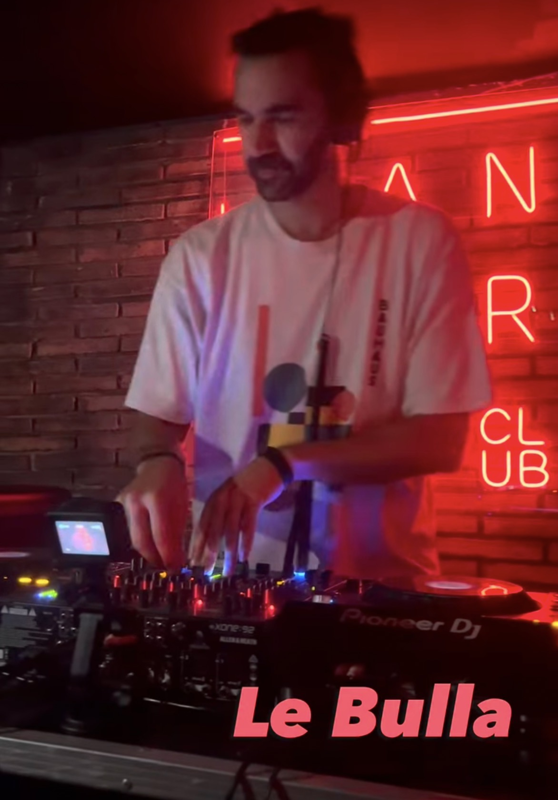

MIXCLOUD · SESIÓN ORIGINALSELECCIÓN / 01
LE BULLA — CURSIVA
39:25 · Le Bulla
Abrir en plataforma Las sesiones en streaming requieren conexión a Internet. Si el reproductor está bloqueado, usa el enlace directo.
Groove, ritmo y conexión. Sesiones de house y momentos que merecen volver a escucharse.
Grabaciones originales y canales oficiales. Selecciona una sesión para abrir su reproductor integrado.

MIXCLOUD · SESIÓN ORIGINAL39:25 · Le Bulla
El vídeo original adjunto funciona sin conexión. Las actuaciones de YouTube se reproducen con Internet.
Vídeos de fuentes identificadas: material adjunto, Airfryer Collective y Bloop London Radio. No se han creado ni sustituido grabaciones.
La música no es solo una pasión: es una forma de crear recuerdos.
Le Bulla construye su sonido alrededor del house en todas sus formas. Groove, ritmo y energía atraviesan sus sesiones, con influencias del jazz, el flamenco, la música clásica y el hip-hop.
Su trayectoria incluye actuaciones en clubes de Madrid, sesiones en Barcelona y colaboraciones con Airfryer Collective y Bloop Radio.
Perfil artístico ↗Acceso a los perfiles musicales oficiales, sin cuentas ni enlaces inventados.